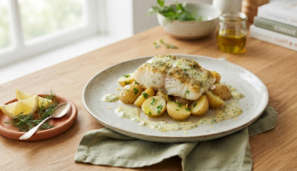
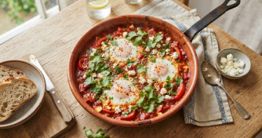
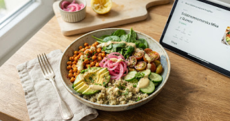
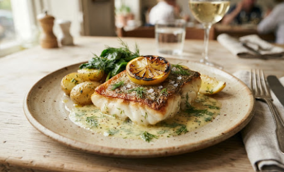

BIBLIOTEKA KULINARZY
48 Receptur
Książka Przepisów & Spiżarnia
Szukaj po nazwie przepisu, składnikach ze spiżarni (np. dorsz, cytryna, szpinak)...
WYNIKI FILTROWANIA (4 DANIA Z DORSZEM)
Trafność: 98%
25 min
Łatwy
Białko: 42g
Pieczony dorsz w sosie cytrynowo-koperkowym
Delikatny filet z atlantyckiego dorsza zapiekany z młodymi ziemniaczkami, z dodatkiem masła…
Obiad
Rybne
Tylko 1 dokupienie

485 kcal
Aktywny
Masz 5/6 składników
18 min
Błyskawiczny
Białko: 24g
Klasyczna szakszuka z wędzoną papryką
Jajka z wolnego wybiegu duszone w sosie z dojrzałych pomidorów malinowych z nasionami kuminu.
Śniadanie / Kolacja
Wegetariańskie

360 kcal
Masz 6/6 składników (Gotowe!)
20 min
Średni
Białko: 19g
Misa mocy z komosą i pieczoną ciecierzycą
Pożywna sałatka z komosą ryżową, chrupiącą ciecierzycą i gęstym sosem sezamowo-limonkowym.
Meal Prep
Wysoki błonnik

Masz 4/7 składników

25 minut
•
10 min przygotowania
•
15 min pieczenia
Pieczony dorsz w sosie cytrynowo-koperkowym z młodymi ziemniakami
Kalorie
485
kcal
Białko
42
g
Węglowodany
38
g
Tłuszcze
16
g
Błonnik
5.8
g
Przelicznik porcji
Składniki dostosowują się automatycznie w czasie rzeczywistym
2
porcje
Masz w spiżarni (3)
Świeże
Świeży koperek
1 pęczek
Masło czosnkowe 82%
30 g
Cytryna bio
1 szt.
Dodaj do zakupów (2)
Filet z dorsza atlantyckiego
350 g
Młode ziemniaczki
400 g
Instrukcja krok po kroku
3 etapy kulinarne
1
Przygotowanie ziemniaczków i piekarnika
Rozgrzej piekarnik do 190°C (termoobieg). Młode ziemniaki dokładnie umyj szczoteczką, przekrój na połówki i obgotuj w osolonej wodzie przez 7 minut, aby lekko zmiękły.
Gotuj 7 min w garnku
2
Aromatyzacja dorsza
Filet z dorsza osusz ręcznikiem papierowym, oprósz solą morską i świeżo mielonym pieprzem. Na wierzchu ułóż plastry masła czosnkowego, cienkie plasterki cytryny oraz posiekany świeży koperek.
3
Pieczenie i serwowanie
Ułóż ziemniaki i rybę w naczyniu żaroodpornym. Wstaw do nagrzanego piekarnika i piecz do uzyskania soczystej, płatkowej struktury mięsa. Podawaj od razu skropione sokiem z pieczonej cytryny.
⏱️ Piecz 18 min w 190°C